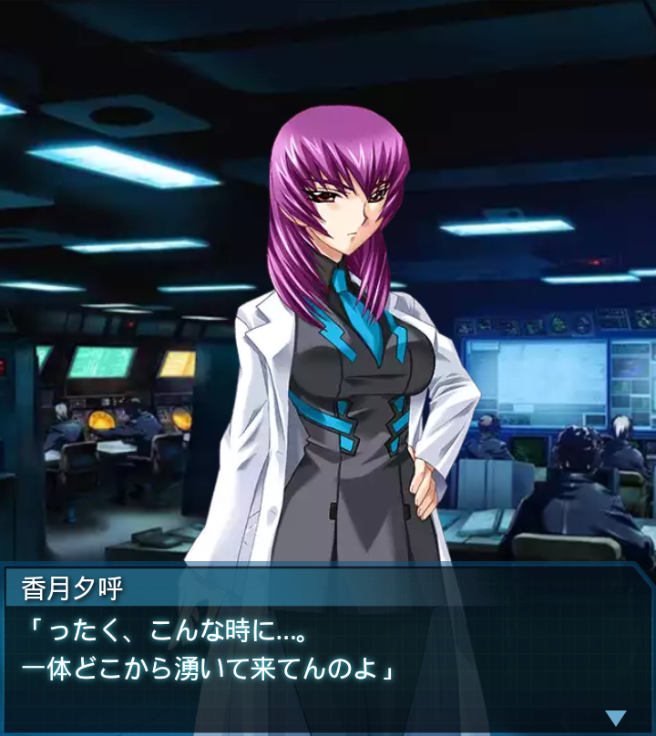

日本・沖縄地方
「――全軍補給完了しました」
『誰』
「閉鎖された米軍基地か…。
補給が出来たのは幸運だったが、
到底万端とは言えないな」
「大尉、台湾に着けば更に補給が
受けられる手筈になっています。
少しの辛抱です」
「――ッ！？
海中よりＢＥＴＡ群接近！！
上陸コースです！」

香月夕呼
「ったく、こんな時に…。
一体どこから湧いて来てんのよ」
「司令！台湾からの通信です。
統一中華戦線がＢＥＴＡと
交戦中！」
香月夕呼
「――全軍出撃準備！
上陸するＢＥＴＡを迎撃後、すぐ
台湾に向かうわよ！」
『誰』
「台湾は一体どうなってるんだ？
本当に補給なんてできるのか？」

篁唯依
「ホワイトファング１よりＣＰ！
出撃準備完了！」
香月夕呼
「ファング中隊出しなさい！
――『誰』、
あんたも急いでッ！」
「司令、ＢＥＴＡの出没元が判明
しました。フィリピン・ルソン島
北東部にあるハイヴです！」
篁唯依
「ハ…ハイヴ！？馬鹿なッ！
そんなところにハイヴなど
存在していないはずだ！」
香月夕呼
「存在してた世界があったって
ことよね…楽観してた訳じゃ
ないけど厄介ねー」
「事変以降、衛星の観測データが
ノイズで受信できず、地球の全容
を把握できない悪影響ですね」
『誰』
「ルソン島といえば、マニラの
目と鼻の先です。まさかマニラは
既に…」
香月夕呼
「先行の輸送船団は今どこ？」
「不明です。通信状態が極めて
悪く、数日前から途絶状態です。
ただ合流予定日はそろそろ…」
篁唯依
「香月司令、このままでは
輸送船団の全滅もあり得ます！」
香月夕呼
「それ以前に台湾よ。
どこまで無事なんだか…。
とにかく、急いで渡るわよ！」